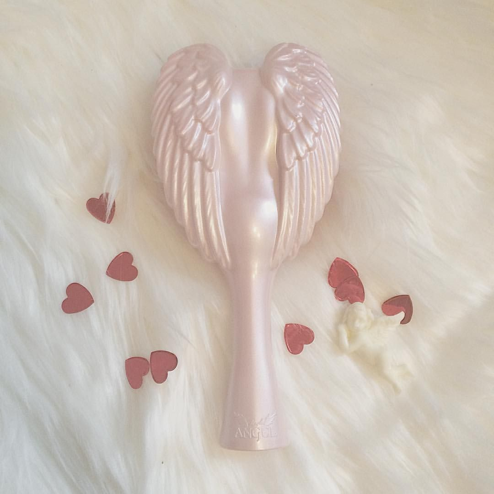
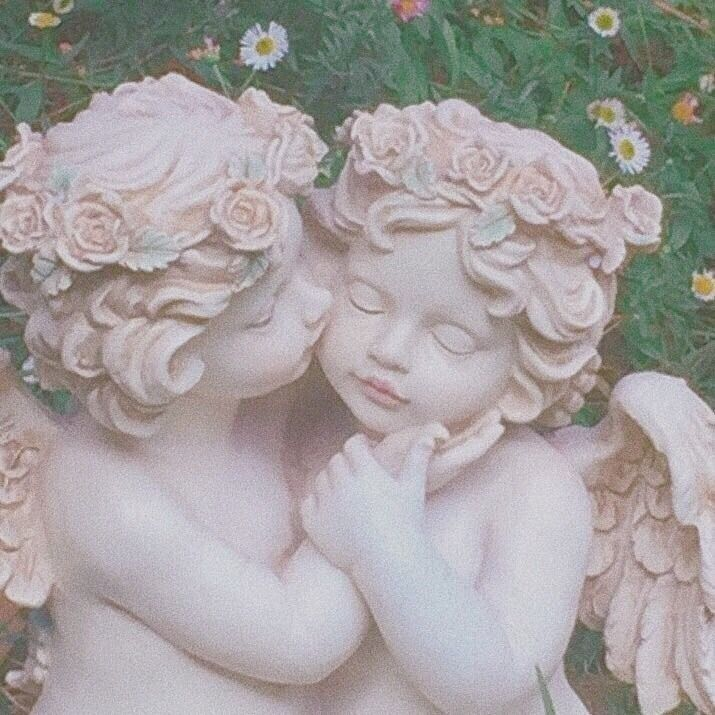
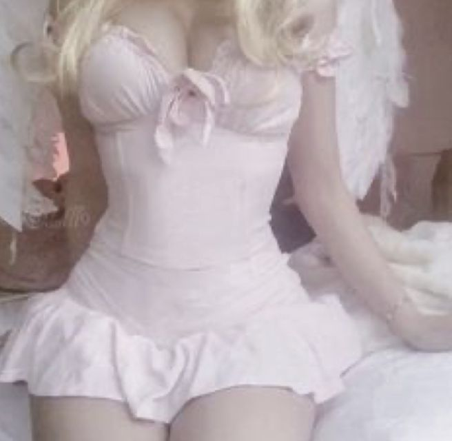

Hello, this is the page for Wannabe Cherub! This is a little get to know me page. I have a digitally painted profile picture most of the time, but this is the alt version here to the side. Read further if you'd like to know what it's like being a wannabe cherub!
To start, my favorite color is pink! (could you guess?) and I love the sort of aesthetic of rococo art, which leads to these pastel and fluffy sort of looks. Of course, what would rococo be without over the top dresses, equally absurd hair, and of course "too many" little cherubs! This is the sort of inspiration for my vibe here, since the monoquer is used for my art pages. Why not shape an art page to look like the art you love? It is the most honest way to introduce myself.
Over here is a strange brush that I've wanted for a while now. I want it mostly because it supposedly helps reduce static and frizz, something I often combat, but I must admit that I am also swayed by its unique appearance. What a darling piece to put on any vanity! This, being a sort of introduction into how I look.
I dress in many styles, not just pinks (I swear!), which may seem a surprise. I love alternative and pastel fashions (such as lolita fashion [which might I add has nothing to do with the book], coquette, and anything that looks like a ballerina or a princess) though I really will wear anything if I find the ocassion. I can look professional and cute at the same time, which is not important to my work of course, but it is important to me! My fashion is a way for me to express myself, and having the option to always pursue a bold lash and glittery demeanor, well, what more could I want!
Any creature needs their companions, and the same goes for a cherub! I am pretty devoted to my family and friends, and am considered fiercly loyal. There are few lengths I wouldn't go for those I love! But that's not really unique, who wouldn't do anything for the people they adore? There are a lot of people in my life that mean the world to me, and I wanted to mention that here. While it isn't anything atypical, it is a part of who I am! I wouldn't be where I am today or even WHO I am today without my family and friends!
None of my family precedeing myself is into technological art, but it's pretty easy to trace where the interest sprouted from. My father is an engineer, particularly one who writes algorithms, and my mother is a published writer. My younger brother is considering following in my footsteps and becoming a game designer, though he is very young and has lots of time to think on the matter!
I hope you feel like you've gotten to know me a little better! This is a peak into the life of a cherub, however small, and I hope you can feel that you are not too different from myself! Until next time, lots of love and ba bye for now!